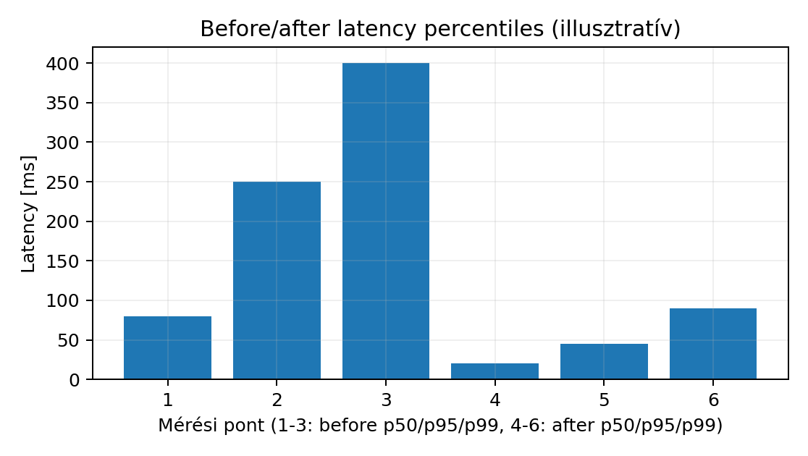

Egy Linux szolgáltatás lassulását gyakran egyszerre több réteg magyarázza: a processz CPU-ideje, a fájl-leírók száma, a memória-allokáció és a blokk-I/O kölcsönhatásban áll. Aki csak egyetlen metrikát néz, például a CPU-kihasználtságot, könnyen tüneti javítást végez: erősebb vCPU-t kér, pedig a valódi ok a kód erőforrás-életciklus hibája. A d109-ben tárgyalt réteghatárok és félrevezető metrikák után itt a cél egy teljes diagnosztikai labor, amelyben a tanuló korrelált process/service/host adatokból gyökérokot (root cause) és hozzájáruló tényezőt (contributing factor) azonosít, a javítást egyetlen változón keresztül hajtja végre, és ugyanazzal a workloaddal ellenőrzi a hatást.
A root cause az a kiváltó hiba, amely megszüntetése
a tünetet reprodukálhatóan eltünteti. A contributing
factor olyan rendszer- vagy környezeti feltétel, amely
önmagában nem okozná a tünetet, de felerősíti a hatást, vagy lassabbá
teszi az észlelést. Például egy fájl-leíró (file descriptor, FD)
szivárgás root cause-a a hibás C++ erőforrás-életciklus, míg a
szolgáltatás alacsony FD-limitje (systemd unitnál
LimitNOFILE=, alapból 1024-es soft limit) contributing
factor.
A controlled bottleneck fixture egy olyan
paraméterezett workload, amely véges, reprodukálható terhelést ad le, és
a mérés alatt ismert módon telíti az egyik erőforrást. A laborban a
lab_bench kliens fix számú HTTP-kérést küld, rögzített
concurrency mellett.
A counter és stack trace együtt elv azt jelenti,
hogy a kernel számlálói (pl. minflt/s, fd-nr,
%system) és a processz veremnyoma (stack trace) együtt
adnak bizonyítékot. A számláló megmutatja, mi nő, a stack trace
megmutatja, hol keletkezik.
A one-change experiment (egyváltozós kísérlet) során egyszerre csak egy beállítást vagy kódrészletet módosítunk. Ez elkülöníti a tünetet okozó tényezőt a zajtól. A mérést a változtatás előtt és után, azonos workloaddal, azonos időablakban végezzük.
A before/after histogram az eloszlást hasonlítja össze, nem csupán az átlagot. A tail latency (p95, p99) érzékenyebb a bottleneckre, mint a mean, ezért a percentilisek külön is szerepelnek. A rollback a változtatás visszaállítása, és a post rollback mérés azt bizonyítja, hogy az észlelt javulás valóban a változtatásnak tulajdonítható. A residual uncertainty (maradék bizonytalanság) az a tudatosan kezelt kétség, amelyet a mérési zaj, a host egyéb folyamatai és a nem teljesen determinisztikus gyorsítótárak okoznak.
A labhost1 Ubuntu Server 24.04 LTS VM, a labop
felhasználó UID 1000. A lab-worker.service egy C++ HTTP
szolgáltatás, amely minden kérésre egy lab_worker.conf
fájlból olvasott chunk mérettel dolgoz fel adatot, hash-t számít, és
naplót ír. A bench eszköz a lab_bench, amely
percentiliseket mér. A labor disk csak a saját lab könyvtárait
használja.
A kiinduló tünet: a lab_bench p95 latency értéke 80
ms-ról 250 ms-ra nőtt, miközben a forgalom nem változott. A desired
state: p95 < 100 ms, p99 < 150 ms.
Az alábbi ábra a teljes kísérletet egy idővonalon foglalja össze: melyik lépés melyik bizonyítékot adja, mikor melyik konfiguráció érvényes, és hogyan alakul a mért p95/p99.
A diagnózis a d004-ben tanult hipotézisvezérelt algoritmussal indul. Elsőként a service és a processz állapotát rögzítjük:
# target: labhost1, user: labop, UID: 1000
# előfeltétel: lab-worker.service fut
systemctl status lab-worker --no-pager
journalctl -u lab-worker -n 50 --no-pager
pgrep -af lab_workerA worker PID 1234. A processz- és rendszerszámlálók:
# target: labhost1, user: labop (sudo: a worker más UID-del fut)
# előfeltétel: labbench 120 kérést indít közben
pid=$(systemctl show -p MainPID --value lab-worker)
sudo pidstat -u -r -v -p "$pid" 1 10
vmstat 1 10
sudo ls /proc/"$pid"/fd | wc -l
sudo ss -antp | grep "pid=$pid,"
systemctl show -p LimitNOFILE,LimitNOFILESoft lab-workerA -u a CPU-, a -r a laphiba- és memória-, a
-v a szál- és FD-statisztikát kapcsolja be; a
pidstat ezeket külön blokkokban írja ki. A
/proc/<pid>/fd, a pidstat -v és az
ss -p processzinformációja más UID processzére csak root
joggal olvasható; a grep "pid=$pid," nem illeszkedik
véletlenül portszámra. Az illusztratív kimenet (időoszlop nélkül,
kivonatosan):
PID %usr %system %guest %wait %CPU Command
1234 45.00 35.00 0.00 10.00 80.00 lab_worker
PID minflt/s majflt/s VSZ RSS %MEM Command
1234 9000.00 12.00 412000 61000 0.75 lab_worker
PID threads fd-nr Command
1234 8 980 lab_workerA processz fd-nr értéke majdnem eléri az 1024-es soft
limitet (LimitNOFILESoft=1024), az RSS a mérés alatt nem
nő. A minflt/s magas, a CPU kernelben töltött ideje 35%. A
journalctl sok “cannot open log file” hibát mutat. A host
vmstat-ja nem mutat teljes CPU-telítettséget, tehát a
bottleneck nem a teljes host CPU, hanem a processz
erőforrás-kezelése.
Most a stack trace következik:
# target: labhost1, user: labop
sudo perf record -g -p "$pid" -- sleep 10
sudo perf report --stdio --no-children | head -30A veremnyom illusztratív csúcsai: __x64_sys_openat,
do_sys_open, __alloc_pages,
handle_mm_fault, do_fault. Ez együtt a
számlálókkal: a kód minden kérésnél új naplófájlt nyit, amit nem zár be
(FD-szivárgás), és minden kéréshez új 256 KiB-os puffert foglal. Ez a
glibc 128 KiB-os kezdeti M_MMAP_THRESHOLD-ja fölött van,
ezért mmap/munmap párral jöhet létre és
szűnhet meg, így a kérés friss, laphibázó lapokat kap (a glibc küszöbe
dinamikus, ezért a tényleges utat –
mmap/munmap vagy heap és trim – a
sudo strace -f -e trace=mmap,munmap,brk -p "$pid" rövid
futtatása dönti el); mivel az RSS nem nő, ez nem memóriaszivárgás, hanem
allokációs churn. A root cause: a worker C++ forráskódjában a
naplófájl-életciklus hibás, és a pufferkezelés kérésenként újrafoglal. A
contributing factor: a unit alacsony FD-limitje
(LimitNOFILESoft=1024, a systemd alapértéke; a shell
ulimit -n-je a szolgáltatásra nem hat) miatt a szivárgás
gyorsan eléri a limitet.
A worker rendelkezik egy pool_reuse opcióval, amely a
processz indulásakor lefoglal egy buffer poolt, és a kérések ezt
használják újra; a naplófájl kezelését a külön log_fd_reuse
opció szabályozza (egyszeri megnyitás). A javítás előtt a config:
# /etc/lab/lab_worker.conf
[resource]
pool_reuse = false
log_fd_reuse = false
chunk_size_kib = 256A one-change elv szerint csak a pool_reuse értéket
állítjuk true-ra, a log_fd_reuse-t nem bántjuk, hogy a pool
hatását külön mérjük. A változtatás:
# target: labhost1, user: root
# előfeltétel: a service leállítható, a rollback config mentve
cp /etc/lab/lab_worker.conf /etc/lab/lab_worker.conf.bak
sed -i 's/^pool_reuse = false/pool_reuse = true/' /etc/lab/lab_worker.conf
systemctl restart lab-worker.serviceA before mérés is egy frissen újraindított processzen fusson (restart → melegítés → mérés), különben maga a restart (a felhalmozott FD-k törlése) is változó lenne; az after mérés ugyanígy a konfigurációváltás utáni restart és melegítés után jön, azonos bench paraméterekkel. 200 mintából a p95 (10 minta felett) még becsülhető, a p99 (2 minta felett) nem, ezért 2000 mintát és 3 ismételt futást használunk:
# target: labhost1, user: labop
# mindkét állapot: restart, melegítés, majd 3 × 2000 minta, concurrency 8
lab_bench --url http://127.0.0.1:8080/ --samples 2000 --concurrency 8 \
--percentiles 50,95,99 --label before --output before.json
# a változtatás (és restart + melegítés) után
lab_bench --url http://127.0.0.1:8080/ --samples 2000 --concurrency 8 \
--percentiles 50,95,99 --label after --output after.jsonA percentilisek numerikus táblázata:
3 futás mediánja (illusztratív, nem mért):
| Mérés | p50 [ms] | p95 [ms] | p99 [ms] |
|---|---|---|---|
| before | 80 | 250 | 400 |
| after | 20 | 45 | 90 |
Az illusztratív, számított ábra:

A p95 250 ms-ról 45 ms-ra csökkent, a p99 400 ms-ról 90 ms-ra. A tail
latency javulása erős bizonyíték arra, hogy a memória-allokáció és a
page fault volt a szűk keresztmetszet. Az FD-k száma csökkent, de mivel
a log_fd_reuse még false, a naplófájl FD-k száma továbbra
is lassan nő.
A rollback előtt a pool_reuse-t visszaállítjuk false-ra,
és újra mérünk:
# target: labhost1, user: root
cp /etc/lab/lab_worker.conf.bak /etc/lab/lab_worker.conf
systemctl restart lab-worker.service
# ellenőrzés: a before értékek térnek vissza
lab_bench --url http://127.0.0.1:8080/ --samples 2000 --concurrency 8 \
--percentiles 50,95,99 --label rollback --output rollback.jsonA rollback mérése 80/245/390 ms értékeket mutat (3 futás mediánja).
Ez megerősíti, hogy a változást a pool_reuse okozta. A
maradék bizonytalanság: a mérés nem zárt rendszeren fut, a host
háttér-I/O-ja és a CPU frekvenciaváltás a p99-et eltérítheti; a három
futás közti szórást a riportban jelölni kell. Azt is jelölni kell, hogy
a pool_reuse után a p99 még mindig 90 ms, ami a
log_fd_reuse false állapotával és a hálózati jitterrel
lehet kapcsolatban; ezt egy következő one-change kísérlet igazolná.
A leggyakoribb hiba, hogy a tanuló a magas CPU %usr
értékből azonnal CPU-bottleneckre következtet, és a vCPU-k számát
növeli. A perf stack trace azonban megmutatja, hogy a CPU
időt a memória-allokáció és az open() syscall foglalja el.
Aztán a javításkor egyszerre kapcsolja be a pool_reuse-t és
növeli a LimitNOFILE= értékét, így nem tudja megmondani,
melyik tényező hatott. A one-change elv így sérül.
Ellenpróba: ha a restart után azonnal mérünk, a page cache hideg,
ezért az első néhány kérés lassabb lehet. A mérés előtt melegítő
kéréseket kell küldeni. Ha a bench nem elég hosszú, a p99 a kevés
mintából adódóan nagy szórást mutat: 200 mintánál a p99 fölött 200 ·
0,01 = 2 minta áll, tehát a p99 lényegében a második legnagyobb érték. A
p95-höz ~200, a p99-hez legalább ~2000 minta és legalább 3 ismételt
futás kell, a futások közti szórással jelölve. A rollback kihagyása
esetén nem zárható ki, hogy a javulás a restart miatt a korábban
felhalmozott állapot törléséből származik. Végül, ha a
journalctl hibákat a tanuló figyelmen kívül hagyja, az
FD-szivárgás jele elveszik a CPU-metrika mögött.
Magyarázó feladat. A fenti laborkörnyezetben a
pidstat %usr/%sys = 45/35,
minflt/s = 9000, fd-nr = 980, a
perf stackben do_fault és
__x64_sys_openat szerepel. Írja le a root cause-ot és
legalább egy contributing factort. Indokolja, miért nem elegendő a
CPU-metrika önmagában.
Adminisztrációs/konfigurációs feladat. A
labhost1-en hajtsa végre a before mérést, kapcsolja be a
pool_reuse opciót, restartolja a szolgáltatást, és mérje
meg az after állapotot. Készítsen rövid reportot a p50/p95/p99
értékekkel. A rollback config mentése és a visszaállítás is része a
feladatnak. Postcondition: a lab_worker.conf visszaáll az
eredeti false értékre, a service fut.
Diagnosztikai/failure feladat. A
pool_reuse bekapcsolása után a p50 20 ms, de a p99 még
mindig 180 ms, a desired state 150 ms-os p99-célja felett. A
log_fd_reuse még false. Állítson fel hipotézist a maradék
tail latency okára, gyűjtsön perf stack trace-t és
fd-nr számlálót, majd hajtsa végre a második one-change
kísérletet vagy a rollback/recovery lépést. Indokolja, milyen residual
uncertainty marad a mérése után.
Root cause: a C++ worker minden kérésnél új
naplófájlt nyit és nem zárja (FD-szivárgás), és minden kéréshez új 256
KiB-os puffert foglal, amelyet a glibc a 128 KiB-os kezdeti mmap-küszöb
fölött mmap/munmap párral kezelhet, ezért a
kérések laphibáznak (a dinamikus küszöb miatt
strace -e trace=mmap,munmap,brk-kel ellenőrizendő).
RSS-növekedés nélkül (sudo pidstat -r -p $pid 1 10,
VmRSS) ez nem memóriaszivárgás, hanem allokációs churn. A
contributing factor: a unit LimitNOFILESoft=1024 (systemd
alapérték;
systemctl show -p LimitNOFILE,LimitNOFILESoft lab-worker)
miatt a fájl-leírók hamar kimerülnek, és az elérhetetlen FD-k miatt a
kérésfeldolgozás hibás útra kényszerül. A CPU-metrika csak a tünetet
mutatja: a processz kernelben töltött ideje magas, de ez a page fault és
az open() syscall következménye, nem a számítási igényé. A
perf stack és a minflt/s adja a hiányzó
bizonyítékot.
Végrehajtás. A before mérés rögzítése után a
pool_reuse = true beállítás, restart, after mérés. A várt
értékek a fenti táblázatban: after p50 20 ms, p95 45 ms, p99 90 ms. A
rollback során a lab_worker.conf.bak visszamásolása,
restart, és a before értékek (p95 ~250 ms) visszatérése igazolja a
változtatás hatását. Mindegyik mérés restart és melegítés után, 3 × 2000
mintával fut. Postcondition: a config false értéken van, a service
aktív, a bench kimenetek címkézetten mentve.
Maradék tail latency. A hipotézis: a
log_fd_reuse false miatt a naplófájl FD-k továbbra is
szivárognak, és amikor a kérés fut, az open() syscall néha
lassan, a fájlrendszer könyvtár-lockja vagy a könyvtárbejegyzés miatt
teljesül. Adatgyűjtés: sudo pidstat -v és
sudo perf report az open pathban, az
fd-nr alakulása. A második one-change kísérlet a
log_fd_reuse = true. Ha a p99 ekkor a 150 ms-os cél alá
esik (3 × 2000 minta mediánjában), a hipotézis igazolt. Residual
uncertainty: a hálózati jitter és a host háttérfolyamatai miatt a p99
futásonként fluktuál; a futások közti szórást jelölni kell, a zárt
mérési szakasz és a melegítő kérések ezt csökkentik, de nem szüntetik
meg.
A teljes Linux bottleneck diagnosztika nem egyetlen metrikát, hanem korrelált process/service/host adatokat vizsgál. A számlálók (FD, page fault, CPU) és a veremnyom együtt vezetnek a root cause-hoz; a contributing factorok megkülönböztetése megelőzi a felesleges kapacitásbővítést. A one-change experiment biztosítja, hogy a javítás hatását elkülönítve mérjük, a before/after hisztogram pedig a tail latency változását is láthatóvá teszi. A rollback megerősíti az összefüggést, a residual uncertainty pedig a valós mérés határait jelzi. Továbbhasznált definíciók: root cause, contributing factor, one-change experiment.
A fejezetben használt Linux diagnosztikai eszközök és a C++ workload viselkedése az Ubuntu Server 24.04 LTS release-hez tartozó dokumentációra támaszkodik. Az aktuális verzió- és viselkedésállításokat a laborban használt kernel és rendszerdokumentáció alapján kell ellenőrizni:
Hivatkozott verzió: Ubuntu Server 24.04 LTS, kernel 6.8, systemd 255, sysstat 12.6, glibc 2.39.
pidstat (-u, -r,
-v; minflt/s, fd-nr): https://sysstat.github.io/.systemd.exec(5) – LimitNOFILE= (soft/hard
limit, alapérték): https://www.freedesktop.org/software/systemd/man/latest/systemd.exec.html.mallopt(3) – M_MMAP_THRESHOLD (kezdeti
érték 128 KiB, dinamikus küszöb): https://man7.org/linux/man-pages/man3/mallopt.3.html;
proc(5) (/proc/<pid>/fd,
VmRSS): https://man7.org/linux/man-pages/man5/proc.5.html.perf_event_open(2) / perf: https://man7.org/linux/man-pages/man2/perf_event_open.2.html;
ss(8): https://man7.org/linux/man-pages/man8/ss.8.html.A példák laborban ellenőrizendők; dátumozott futtatási napló (reprodukciós trace) még nem készült.
Ellenőrzési hiányok: A fejezet nem állítja, hogy az
itt megadott percentilis értékek ténylegesen mért adatok; azok
hipotetikus, illusztratív labworkload-kimenetek. A pontos számok a
laborban futtatott lab_bench tényleges kimenetétől és a
host terhelésétől függenek. A worker program viselkedését, a
pool_reuse és log_fd_reuse opciók tényleges
támogatását a laborban használt C++ source és a config dokumentációja
határozza meg; ezt a feladat során ellenőrizni kell.